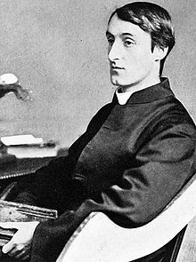

Wednesday, January the 27th, 2016
back to: title, date or indexes
The Oxford University Press recently published Volume VIII of its majestic Collected Works of Gerard Manley Hopkins. The latest book—a snip at £110—is devoted to the Diaries, Journals, and Notebooks. As a good Catholic, Hopkins kept a record of the sins he committed, and this new edition includes the previously suppressed details. We learn, for example, of frequent bouts of ”O.H.” (“old habits”—I think we can guess what that means) and of occasions when unseemly thoughts are prompted by the sight of choristers, “cart-boys”, and other young men.
But several other entries are suggestive of the fathomless depths of the poet's sickening depravity and moral turpitude. He confesses in the privacy of his diary to “looking at and thinking of stallions” and worse, much worse, “self-indulgence at Croydon in fruit”.
How Hopkins escaped prison is one of the enduring mysteries of Victorian Jesuit literature.

Hooting Yard on the Air, January the 28th, 2016 : “Fear Of Putti” (starts around 26:18)